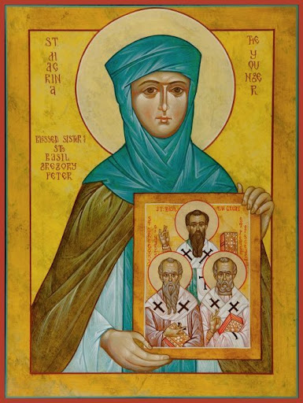

„Hoće li tko za mnom, neka se odreče samoga sebe, neka uzme svoj križ i neka ide za mnom.” (Mt 16,24)

Sveta Makrina Mlađa, rođena u 4. stoljeću u Cezareji, potječe iz jedne od najznamenitijih kršćanskih obitelji u povijesti. Bila je najstarija kći svetih roditelja Bazilija i Emelije te sestra velikih crkvenih otaca Bazilija Velikog i Grgura Nisenskog. Iako je bila obećana zaručniku, nakon njegove prerane smrti odlučila je svoj život u potpunosti posvetiti Bogu kroz djevičanstvo, postavši duhovnim stupom i uzorom cijeloj svojoj obitelji.
Njezin asketski ideal i duboka pobožnost snažno su utjecali na njezinu majku i braću, koje je usmjeravala prema duhovnom savršenstvu. Makrina se posebno isticala u proučavanju Svetoga pisma i odgoju mlađe braće, a obiteljsko imanje na obalama Crnog mora pretvorila je u dvostruki samostan – muški i ženski. Njezin brat Grgur Nisenski, koji je napisao njezin životopis, isticao je kako je njezino lice isijavalo Božju čistoću, čineći je uzorom redovničkog života.
Čak i u trenucima smrti 379. godine, Makrina je ostala vjerna strogoj pokori, želeći izdahnuti na goloj zemlji umjesto na postelji. Njezina intelektualna snaga i asketska disciplina učinile su je jednom od najvažnijih žena ranog kršćanstva. Danas se štuje kao uzor svetosti i posvećenog života, a njezino nasljeđe živi kroz djela njezine braće na koja je imala presudan utjecaj.